Globalni chat — svih deset tema
Stvarni emulator, 27.10.2026, logički prikaz 360×780.
Stvarni Android UI pregled svih deset tema: ulazak, prazna istorija, zaglavlje/online oznaka, kanonski PNG, unos sa zatvorenom i otvorenom tastaturom i izlazak.
U pregledanim stanjima svih deset tema nisu nađeni novi vizuelni problemi. Nije menjana implementacija Globalnog chata niti kreiran dodatni PNG.
Pregledana je postojeća objavljena verzija. Ranije lokalne dorade R07/R12/R14/R15 nisu commitovane ni deployovane na zahtev korisnika; ovi snimci nisu potvrda tih dorada.
| Tema | PNG u sobi | Rezultat pregledanih stanja |
|---|
| Zelena | 4 | prihvatljiv u pregledanim stanjima |
| Svetlo zlato | 4 | prihvatljiv u pregledanim stanjima |
| Trula višnja | 4 | prihvatljiv u pregledanim stanjima |
| Plavi okean | 4 | prihvatljiv u pregledanim stanjima |
| Neon Cyber | 4 | prihvatljiv u pregledanim stanjima |
| Kraljevski ametist | 4 | prihvatljiv u pregledanim stanjima |
| Vaskršnja | 4 | prihvatljiv u pregledanim stanjima |
| Pustinjsko staklo | 4 | prihvatljiv u pregledanim stanjima |
| Mesečev sjaj | 4 | prihvatljiv u pregledanim stanjima |
| Severna maglina | 4 | prihvatljiv u pregledanim stanjima |
Granice provere
- Istorija je bila prazna u svim temama. Stvarne poruke, duge poruke, avatari, meni drugog igrača i potvrda prijave poruke nisu vizuelno potvrđeni ovim prolazom.
- Početna potvrda pravila stvarno je pregledana samo u Zelenoj. Ostale palete imaju statičke provere; ne tvrdi se novi Android dokaz za sve potvrde.
- Pregled nije fizički Samsung S25, merenje hladnog mrežnog cache-a niti merenje tačnog trajanja intra. Podešeno čekanje u alatu nije latencija aplikacije.
- Četiri putanje označavaju uloge unutar same sobe. PNG menija/intro izvedenice i avatari nisu sabrani kao dodatni novi identiteti.
Statička provera: četiri različita PNG po temi, jedinstveni binarni hash za svaku tematsku ulogu; najmanji kontrast ranijih izračunatih rasporeda 4,59:1, paletnih parova i obaveštenja 4,54:1.
Nisu poslate poruke/pozivi/prijave, pokretane partije, kupovine, preuzimanja nagrada ili nagradne reklame. Automatski test interstitiali pri izlasku zatvoreni su Android back kontrolom. Jedan slučajno unet znak zbog promene položaja tastature odmah je obrisan bez slanja; taj kadar nije uključen u galeriju. Korišćene su vidljive Android kontrole i snimci, bez debugger pristupa ili izvlačenja sesije.
Zelena
Krem/zeleno mastilo i Clay površine. Geometrija i tipografija vizuelno odgovaraju Zelenoj; nema odsečenog teksta ili footera u sistemskoj zoni.
Zelena — prazna istorija
Krem/zeleno mastilo i Clay površine.
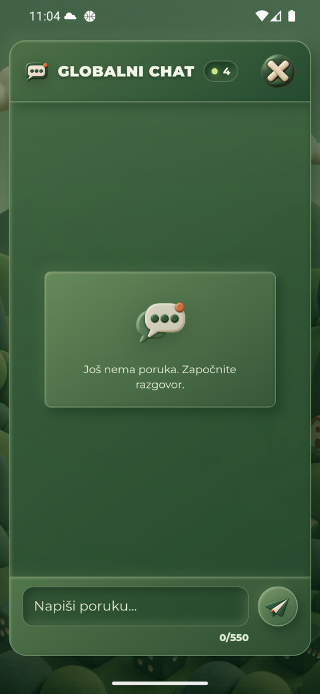
Zelena — tastatura
Prazan unos 0/550, slanje i broj znakova ostaju iznad tastature. Bez preklapanja sa sistemskom navigacijom.
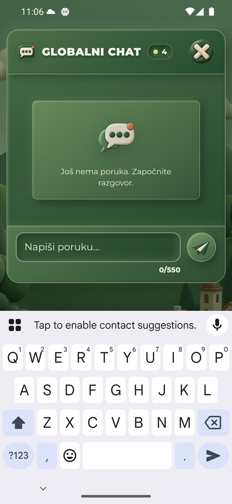
Svetlo zlato
Tamno mastilo na svetloj zlatnoj podlozi. Geometrija i tipografija vizuelno odgovaraju Zelenoj; nema odsečenog teksta ili footera u sistemskoj zoni.
Svetlo zlato — prazna istorija
Tamno mastilo na svetloj zlatnoj podlozi.
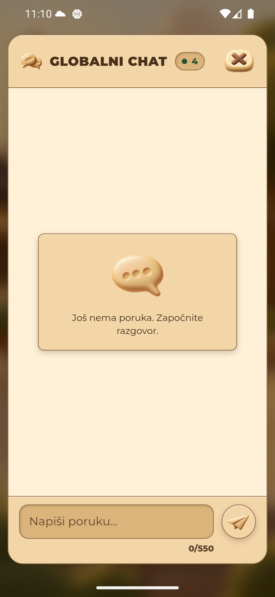
Svetlo zlato — tastatura
Prazan unos 0/550, slanje i broj znakova ostaju iznad tastature. Bez preklapanja sa sistemskom navigacijom.
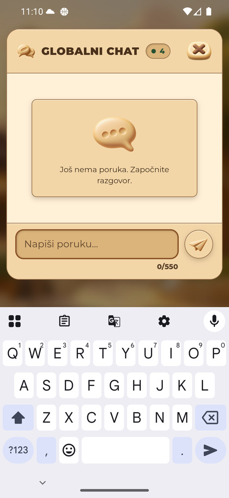
Trula višnja
Svetlo mastilo na bordo površinama. Geometrija i tipografija vizuelno odgovaraju Zelenoj; nema odsečenog teksta ili footera u sistemskoj zoni.
Trula višnja — prazna istorija
Svetlo mastilo na bordo površinama.
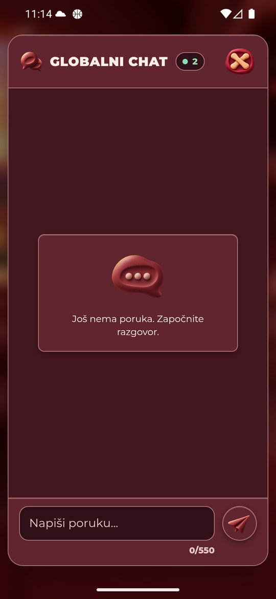
Trula višnja — tastatura
Prazan unos 0/550, slanje i broj znakova ostaju iznad tastature. Bez preklapanja sa sistemskom navigacijom.
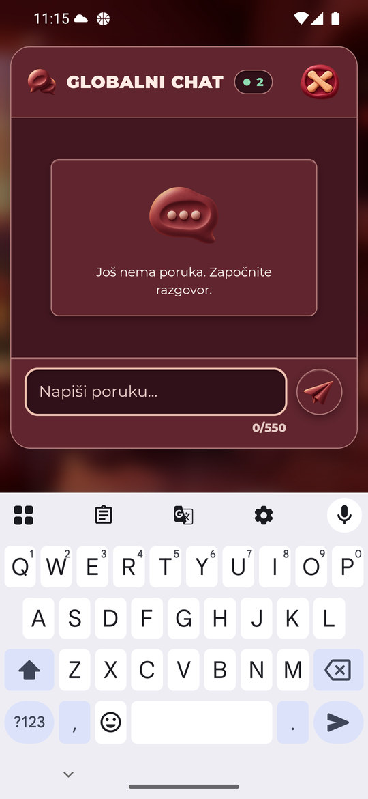
Plavi okean
Tamno mastilo na svetlim plavim površinama. Geometrija i tipografija vizuelno odgovaraju Zelenoj; nema odsečenog teksta ili footera u sistemskoj zoni.
Plavi okean — prazna istorija
Tamno mastilo na svetlim plavim površinama.
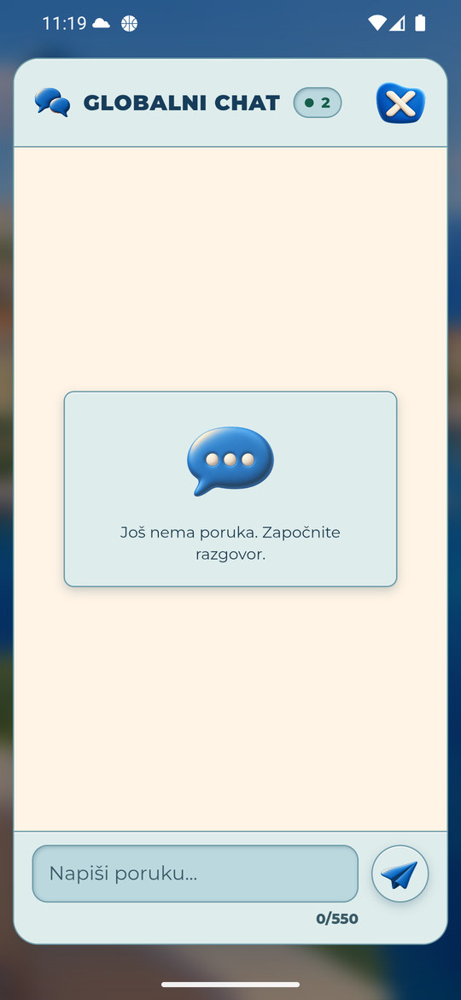
Plavi okean — tastatura
Prazan unos 0/550, slanje i broj znakova ostaju iznad tastature. Bez preklapanja sa sistemskom navigacijom.
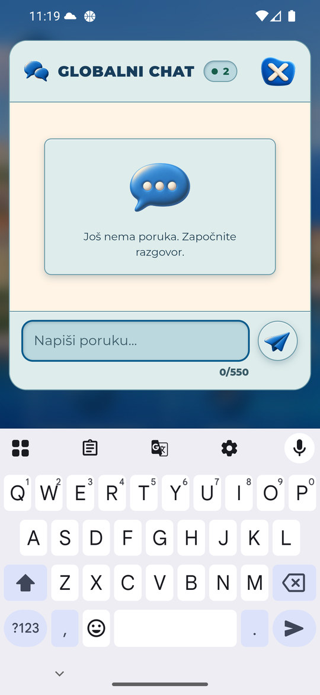
Neon Cyber
Svetlo mastilo, taman panel i ograničeni cijan akcenti. Geometrija i tipografija vizuelno odgovaraju Zelenoj; nema odsečenog teksta ili footera u sistemskoj zoni.
Neon Cyber — prazna istorija
Svetlo mastilo, taman panel i ograničeni cijan akcenti.
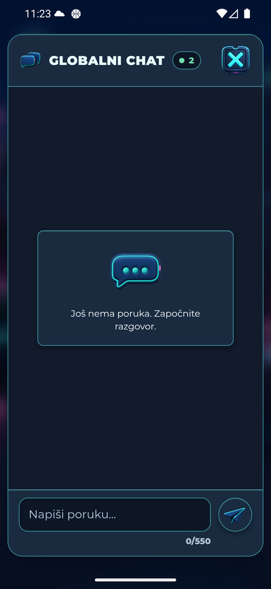
Neon Cyber — tastatura
Prazan unos 0/550, slanje i broj znakova ostaju iznad tastature. Bez preklapanja sa sistemskom navigacijom.
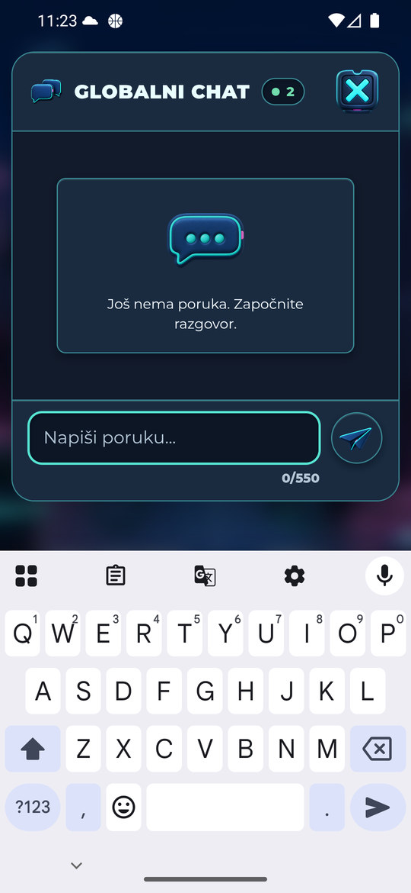
Kraljevski ametist
Ljubičasti panel, svetlo mastilo i zlatni fokus. Geometrija i tipografija vizuelno odgovaraju Zelenoj; nema odsečenog teksta ili footera u sistemskoj zoni.
Kraljevski ametist — prazna istorija
Ljubičasti panel, svetlo mastilo i zlatni fokus.
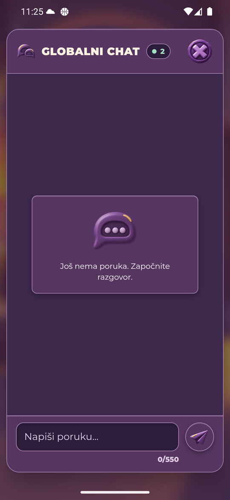
Kraljevski ametist — tastatura
Prazan unos 0/550, slanje i broj znakova ostaju iznad tastature. Bez preklapanja sa sistemskom navigacijom.
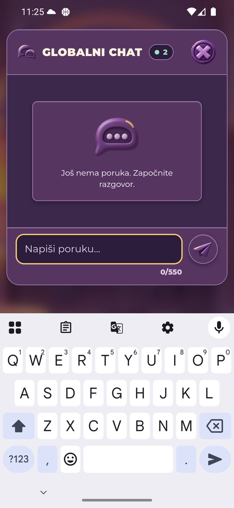
Vaskršnja
Krem/salvija površine i tamno mastilo; novi tematski PNG. Geometrija i tipografija vizuelno odgovaraju Zelenoj; nema odsečenog teksta ili footera u sistemskoj zoni.
Vaskršnja — prazna istorija
Krem/salvija površine i tamno mastilo; novi tematski PNG.
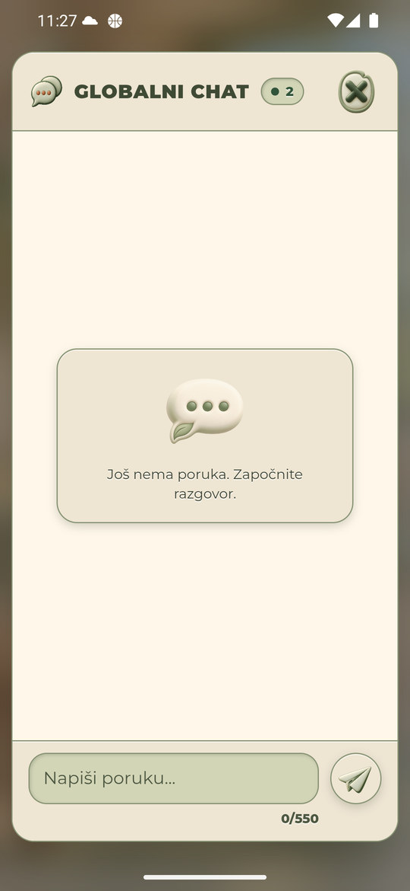
Vaskršnja — tastatura
Prazan unos 0/550, slanje i broj znakova ostaju iznad tastature. Bez preklapanja sa sistemskom navigacijom.
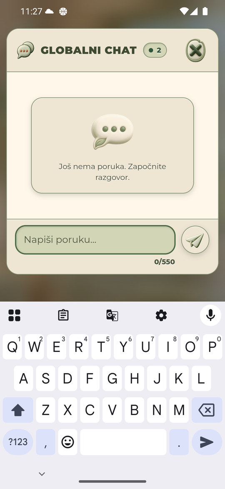
Pustinjsko staklo
Pesak/terakota površine i tamno mastilo; novi tematski PNG. Geometrija i tipografija vizuelno odgovaraju Zelenoj; nema odsečenog teksta ili footera u sistemskoj zoni.
Pustinjsko staklo — prazna istorija
Pesak/terakota površine i tamno mastilo; novi tematski PNG.
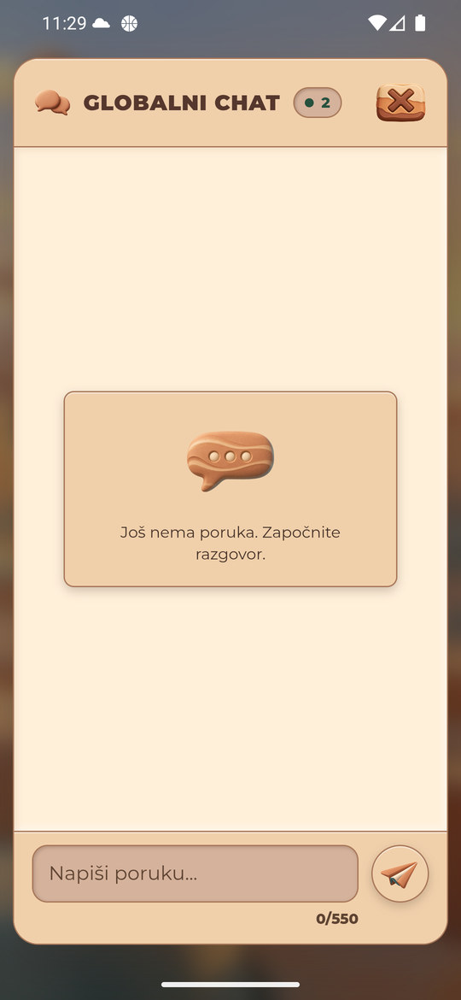
Pustinjsko staklo — tastatura
Prazan unos 0/550, slanje i broj znakova ostaju iznad tastature. Bez preklapanja sa sistemskom navigacijom.
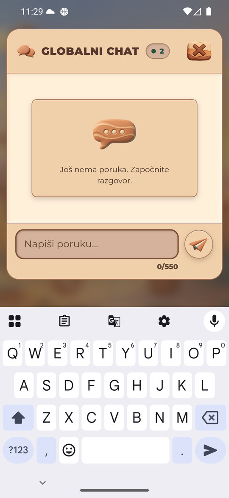
Mesečev sjaj
Tamnosive površine, srebrni PNG i svetlo mastilo. Geometrija i tipografija vizuelno odgovaraju Zelenoj; nema odsečenog teksta ili footera u sistemskoj zoni.
Mesečev sjaj — prazna istorija
Tamnosive površine, srebrni PNG i svetlo mastilo.
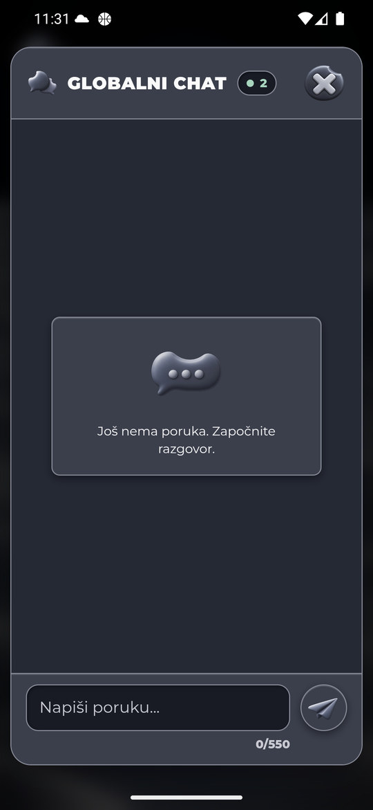
Mesečev sjaj — tastatura
Prazan unos 0/550, slanje i broj znakova ostaju iznad tastature. Bez preklapanja sa sistemskom navigacijom.
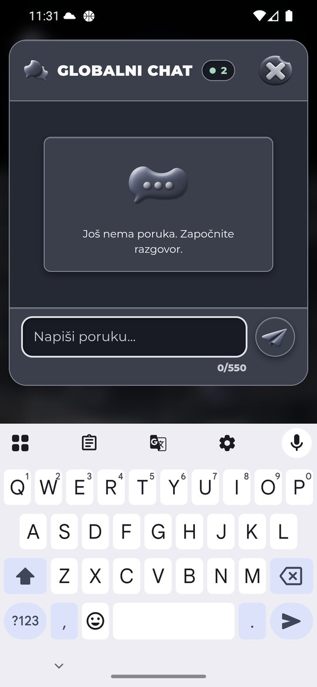
Severna maglina
Tamna plava podloga, svetlo mastilo i plavi PNG. Geometrija i tipografija vizuelno odgovaraju Zelenoj; nema odsečenog teksta ili footera u sistemskoj zoni.
Severna maglina — prazna istorija
Tamna plava podloga, svetlo mastilo i plavi PNG.
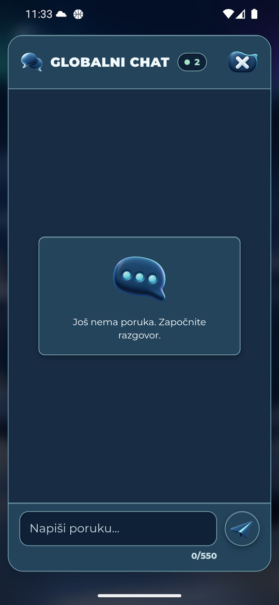
Severna maglina — tastatura
Prazan unos 0/550, slanje i broj znakova ostaju iznad tastature. Bez preklapanja sa sistemskom navigacijom.
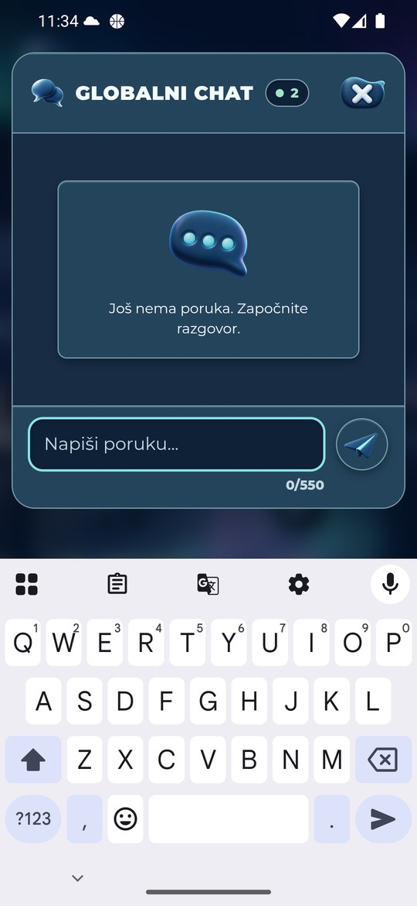
Dodatni dokazi
Zelena — početna potvrda pravila
Stvarno prikazana i prihvaćena pri prvom ulasku. Potvrda pravila u ostalih devet tema nije ponavljana; njen kontrast je zasebna statička provera.
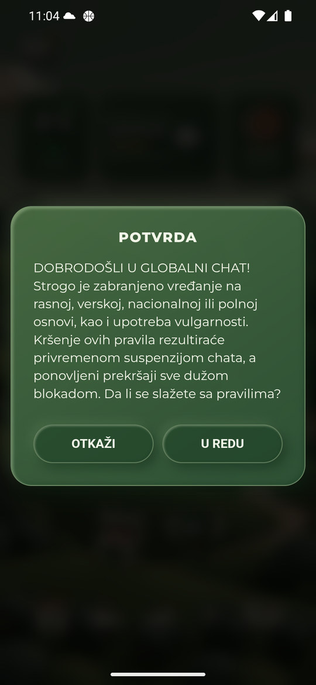
Vraćeno početno okruženje
Zelena i originalnih 1440×3120 / 560dpi. Prijava očuvana, tastatura zatvorena, show_ime_with_hard_keyboard vraćen sa 1 na početnih 0.
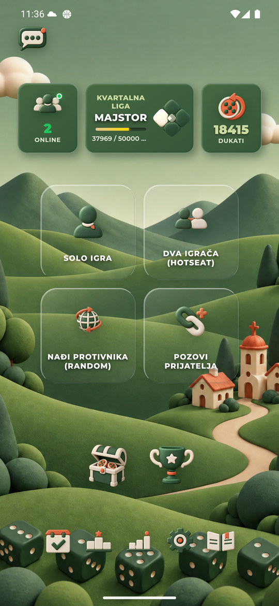